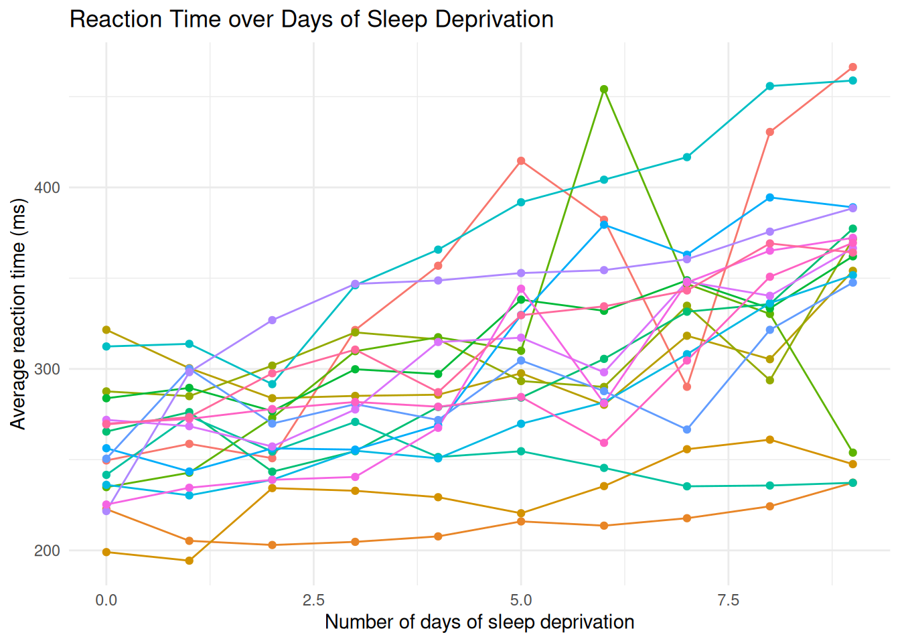

Last updated: 2025-10-24
Checks: 7 0
Knit directory: muse/
This reproducible R Markdown analysis was created with workflowr (version 1.7.1). The Checks tab describes the reproducibility checks that were applied when the results were created. The Past versions tab lists the development history.
Great! Since the R Markdown file has been committed to the Git repository, you know the exact version of the code that produced these results.
Great job! The global environment was empty. Objects defined in the global environment can affect the analysis in your R Markdown file in unknown ways. For reproduciblity it’s best to always run the code in an empty environment.
The command set.seed(20200712) was run prior to running
the code in the R Markdown file. Setting a seed ensures that any results
that rely on randomness, e.g. subsampling or permutations, are
reproducible.
Great job! Recording the operating system, R version, and package versions is critical for reproducibility.
Nice! There were no cached chunks for this analysis, so you can be confident that you successfully produced the results during this run.
Great job! Using relative paths to the files within your workflowr project makes it easier to run your code on other machines.
Great! You are using Git for version control. Tracking code development and connecting the code version to the results is critical for reproducibility.
The results in this page were generated with repository version 638126d. See the Past versions tab to see a history of the changes made to the R Markdown and HTML files.
Note that you need to be careful to ensure that all relevant files for
the analysis have been committed to Git prior to generating the results
(you can use wflow_publish or
wflow_git_commit). workflowr only checks the R Markdown
file, but you know if there are other scripts or data files that it
depends on. Below is the status of the Git repository when the results
were generated:
Ignored files:
Ignored: .Rproj.user/
Ignored: data/1M_neurons_filtered_gene_bc_matrices_h5.h5
Ignored: data/293t/
Ignored: data/293t_3t3_filtered_gene_bc_matrices.tar.gz
Ignored: data/293t_filtered_gene_bc_matrices.tar.gz
Ignored: data/5k_Human_Donor1_PBMC_3p_gem-x_5k_Human_Donor1_PBMC_3p_gem-x_count_sample_filtered_feature_bc_matrix.h5
Ignored: data/5k_Human_Donor2_PBMC_3p_gem-x_5k_Human_Donor2_PBMC_3p_gem-x_count_sample_filtered_feature_bc_matrix.h5
Ignored: data/5k_Human_Donor3_PBMC_3p_gem-x_5k_Human_Donor3_PBMC_3p_gem-x_count_sample_filtered_feature_bc_matrix.h5
Ignored: data/5k_Human_Donor4_PBMC_3p_gem-x_5k_Human_Donor4_PBMC_3p_gem-x_count_sample_filtered_feature_bc_matrix.h5
Ignored: data/97516b79-8d08-46a6-b329-5d0a25b0be98.h5ad
Ignored: data/Parent_SC3v3_Human_Glioblastoma_filtered_feature_bc_matrix.tar.gz
Ignored: data/brain_counts/
Ignored: data/cl.obo
Ignored: data/cl.owl
Ignored: data/jurkat/
Ignored: data/jurkat:293t_50:50_filtered_gene_bc_matrices.tar.gz
Ignored: data/jurkat_293t/
Ignored: data/jurkat_filtered_gene_bc_matrices.tar.gz
Ignored: data/pbmc20k/
Ignored: data/pbmc20k_seurat/
Ignored: data/pbmc3k.h5ad
Ignored: data/pbmc3k/
Ignored: data/pbmc3k_bpcells_mat/
Ignored: data/pbmc3k_export.mtx
Ignored: data/pbmc3k_matrix.mtx
Ignored: data/pbmc3k_seurat.rds
Ignored: data/pbmc4k_filtered_gene_bc_matrices.tar.gz
Ignored: data/pbmc_1k_v3_filtered_feature_bc_matrix.h5
Ignored: data/pbmc_1k_v3_raw_feature_bc_matrix.h5
Ignored: data/refdata-gex-GRCh38-2020-A.tar.gz
Ignored: data/seurat_1m_neuron.rds
Ignored: data/t_3k_filtered_gene_bc_matrices.tar.gz
Ignored: r_packages_4.4.1/
Ignored: r_packages_4.5.0/
Untracked files:
Untracked: analysis/bioc_scrnaseq.Rmd
Untracked: bpcells_matrix/
Untracked: data/Caenorhabditis_elegans.WBcel235.113.gtf.gz
Untracked: data/GCF_043380555.1-RS_2024_12_gene_ontology.gaf.gz
Untracked: data/arab.rds
Untracked: data/astronomicalunit.csv
Untracked: data/femaleMiceWeights.csv
Untracked: m3/
Unstaged changes:
Modified: analysis/isoform_switch_analyzer.Rmd
Note that any generated files, e.g. HTML, png, CSS, etc., are not included in this status report because it is ok for generated content to have uncommitted changes.
These are the previous versions of the repository in which changes were
made to the R Markdown (analysis/mixed_effects_models.Rmd)
and HTML (docs/mixed_effects_models.html) files. If you’ve
configured a remote Git repository (see ?wflow_git_remote),
click on the hyperlinks in the table below to view the files as they
were in that past version.
| File | Version | Author | Date | Message |
|---|---|---|---|---|
| Rmd | 638126d | Dave Tang | 2025-10-24 | AIC and BIC |
| html | 0400650 | Dave Tang | 2025-10-21 | Build site. |
| Rmd | c20a388 | Dave Tang | 2025-10-21 | Random effects specification in R’s formula syntax |
| html | 238e406 | Dave Tang | 2025-10-21 | Build site. |
| Rmd | 96acdc5 | Dave Tang | 2025-10-21 | Mixed-effects models |
Mixed-effects models (also known as multilevel models, hierarchical models, or random-effects models) are extensions of linear regression that account for both fixed and random effects.
Given students’ test scores across multiple schools:
Each school might have a slightly different average score (intercept) or respond differently to study hours (slope).
Mixed-effects models handle this by modeling:
\[ \text{Score}*{ij} = \beta_0 + \beta_1 \text{Hours}*{ij} + u_{0j} + \epsilon_{ij} \]
where:
Each school \(( j )\) has its own intercept \(( u_{0j} )\) that represents how that school’s mean score differs from the overall population mean \(( \beta_0 )\).
Each student \(( i )\) within that school has their own hours studied (\(( \text{Hours}*{ij} )\)) and residual error (\(( \epsilon_{ij} )\)).
A random effect is a variable whose levels are drawn from a larger population, not specifically fixed.
For instance:
Random effects account for correlation among observations within the same group and share information across groups.
Install dependencies.
install.packages("lme4")Example data: Reaction times in a sleep deprivation study.
These data are from the study described in Belenky et al. (2003), for the most sleep-deprived group (3 hours time-in-bed) and for the first 10 days of the study, up to the recovery period. The original study analyzed speed (1/(reaction time)) and treated day as a categorical rather than a continuous predictor.
library(lme4)Loading required package: Matrix
Attaching package: 'Matrix'The following objects are masked from 'package:tidyr':
expand, pack, unpackdata("sleepstudy")
head(sleepstudy) Reaction Days Subject
1 249.5600 0 308
2 258.7047 1 308
3 250.8006 2 308
4 321.4398 3 308
5 356.8519 4 308
6 414.6901 5 308Visualise the data.
ggplot(sleepstudy, aes(x = Days, y = Reaction, group = Subject, colour = Subject)) +
geom_line() +
geom_point() +
theme_minimal() +
labs(
title = "Reaction Time over Days of Sleep Deprivation",
y = "Average reaction time (ms)",
x = "Number of days of sleep deprivation"
) +
theme(legend.position = "none")
| Version | Author | Date |
|---|---|---|
| 238e406 | Dave Tang | 2025-10-21 |
Fit a simple linear model (no random effects).
lm_model <- lm(Reaction ~ Days, data = sleepstudy)
summary(lm_model)
Call:
lm(formula = Reaction ~ Days, data = sleepstudy)
Residuals:
Min 1Q Median 3Q Max
-110.848 -27.483 1.546 26.142 139.953
Coefficients:
Estimate Std. Error t value Pr(>|t|)
(Intercept) 251.405 6.610 38.033 < 2e-16 ***
Days 10.467 1.238 8.454 9.89e-15 ***
---
Signif. codes: 0 '***' 0.001 '**' 0.01 '*' 0.05 '.' 0.1 ' ' 1
Residual standard error: 47.71 on 178 degrees of freedom
Multiple R-squared: 0.2865, Adjusted R-squared: 0.2825
F-statistic: 71.46 on 1 and 178 DF, p-value: 9.894e-15This assumes everyone has the same intercept and slope but each subject behaves differently.
Fit a mixed-effects model (random intercepts).
m1 <- lmer(Reaction ~ Days + (1 | Subject), data = sleepstudy)
summary(m1)Linear mixed model fit by REML ['lmerMod']
Formula: Reaction ~ Days + (1 | Subject)
Data: sleepstudy
REML criterion at convergence: 1786.5
Scaled residuals:
Min 1Q Median 3Q Max
-3.2257 -0.5529 0.0109 0.5188 4.2506
Random effects:
Groups Name Variance Std.Dev.
Subject (Intercept) 1378.2 37.12
Residual 960.5 30.99
Number of obs: 180, groups: Subject, 18
Fixed effects:
Estimate Std. Error t value
(Intercept) 251.4051 9.7467 25.79
Days 10.4673 0.8042 13.02
Correlation of Fixed Effects:
(Intr)
Days -0.371Reaction - The response variable
(dependent variable).Days - A fixed effect (predictor that
applies to everyone).(1 | Subject) - A random effect where
each Subject has their own intercept.
lme4::lmer() (and similar functions), random effects
always have the structure:
(random effects terms | grouping factor)(1 | Subject) means allow the intercept (1) to vary by
Subject; in a model formula, 1 represents the intercept
term, which is the baseline level of the response variable when all
predictors = 0.+ - Combine fixed and random effects.The model says:
\[ \text{Reaction}*{ij} = \beta_0 + \beta_1 \text{Days}*{ij} + u_{0j} + \epsilon_{ij} \]
where:
Each subject has their own baseline reaction time, but we assume the same slope (same rate of slowing down).
Fit multiple models with increasing complexity and calculate AIC (Akaike Information Criterion) and BIC (Bayesian Information Criterion), which are information criteria used for model selection. They help you balance:
The actual numbers are meaningless by themselves and what matters is the relative comparison between models:
m0 <- lm(Reaction ~ Days, data = sleepstudy)
# Model 1: Random intercept only
m1 <- lmer(Reaction ~ Days + (1 | Subject), data = sleepstudy)
# Model 2: Random intercept and random slope
m2 <- lmer(Reaction ~ Days + (Days | Subject), data = sleepstudy)
# Model 3: Random intercept and random slope (uncorrelated)
m3 <- lmer(Reaction ~ Days + (Days || Subject), data = sleepstudy)
aic_values <- c(
M0_lm = AIC(m0),
M1_random_intercept = AIC(m1),
M2_random_slope_corr = AIC(m2),
M3_random_slope_uncorr = AIC(m3)
)
bic_values <- c(
M0_lm = BIC(m0),
M1_random_intercept = BIC(m1),
M2_random_slope_corr = BIC(m2),
M3_random_slope_uncorr = BIC(m3)
)
comparison_df <- data.frame(
Model = c("M0: Linear model",
"M1: Random intercept",
"M2: Random intercept + slope (correlated)",
"M3: Random intercept + slope (uncorrelated)"),
AIC = round(aic_values, 2),
BIC = round(bic_values, 2),
Delta_AIC = round(aic_values - min(aic_values), 2),
Delta_BIC = round(bic_values - min(bic_values), 2)
)
comparison_df Model AIC
M0_lm M0: Linear model 1906.29
M1_random_intercept M1: Random intercept 1794.47
M2_random_slope_corr M2: Random intercept + slope (correlated) 1755.63
M3_random_slope_uncorr M3: Random intercept + slope (uncorrelated) 1753.67
BIC Delta_AIC Delta_BIC
M0_lm 1915.87 152.62 146.24
M1_random_intercept 1807.24 40.80 37.60
M2_random_slope_corr 1774.79 1.96 5.15
M3_random_slope_uncorr 1769.63 0.00 0.00
sessionInfo()R version 4.5.0 (2025-04-11)
Platform: x86_64-pc-linux-gnu
Running under: Ubuntu 24.04.3 LTS
Matrix products: default
BLAS: /usr/lib/x86_64-linux-gnu/openblas-pthread/libblas.so.3
LAPACK: /usr/lib/x86_64-linux-gnu/openblas-pthread/libopenblasp-r0.3.26.so; LAPACK version 3.12.0
locale:
[1] LC_CTYPE=en_US.UTF-8 LC_NUMERIC=C
[3] LC_TIME=en_US.UTF-8 LC_COLLATE=en_US.UTF-8
[5] LC_MONETARY=en_US.UTF-8 LC_MESSAGES=en_US.UTF-8
[7] LC_PAPER=en_US.UTF-8 LC_NAME=C
[9] LC_ADDRESS=C LC_TELEPHONE=C
[11] LC_MEASUREMENT=en_US.UTF-8 LC_IDENTIFICATION=C
time zone: Etc/UTC
tzcode source: system (glibc)
attached base packages:
[1] stats graphics grDevices utils datasets methods base
other attached packages:
[1] lme4_1.1-37 Matrix_1.7-3 lubridate_1.9.4 forcats_1.0.0
[5] stringr_1.5.1 dplyr_1.1.4 purrr_1.0.4 readr_2.1.5
[9] tidyr_1.3.1 tibble_3.3.0 ggplot2_3.5.2 tidyverse_2.0.0
[13] workflowr_1.7.1
loaded via a namespace (and not attached):
[1] gtable_0.3.6 xfun_0.52 bslib_0.9.0 processx_3.8.6
[5] lattice_0.22-6 callr_3.7.6 tzdb_0.5.0 vctrs_0.6.5
[9] tools_4.5.0 Rdpack_2.6.4 ps_1.9.1 generics_0.1.4
[13] pkgconfig_2.0.3 RColorBrewer_1.1-3 lifecycle_1.0.4 compiler_4.5.0
[17] farver_2.1.2 git2r_0.36.2 getPass_0.2-4 httpuv_1.6.16
[21] htmltools_0.5.8.1 sass_0.4.10 yaml_2.3.10 later_1.4.2
[25] pillar_1.10.2 nloptr_2.2.1 jquerylib_0.1.4 whisker_0.4.1
[29] MASS_7.3-65 cachem_1.1.0 reformulas_0.4.1 boot_1.3-31
[33] nlme_3.1-168 tidyselect_1.2.1 digest_0.6.37 stringi_1.8.7
[37] labeling_0.4.3 splines_4.5.0 rprojroot_2.0.4 fastmap_1.2.0
[41] grid_4.5.0 cli_3.6.5 magrittr_2.0.3 withr_3.0.2
[45] scales_1.4.0 promises_1.3.3 timechange_0.3.0 rmarkdown_2.29
[49] httr_1.4.7 hms_1.1.3 evaluate_1.0.3 knitr_1.50
[53] rbibutils_2.3 rlang_1.1.6 Rcpp_1.0.14 glue_1.8.0
[57] rstudioapi_0.17.1 minqa_1.2.8 jsonlite_2.0.0 R6_2.6.1
[61] fs_1.6.6